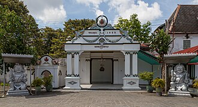
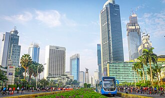
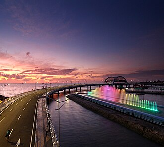
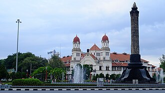
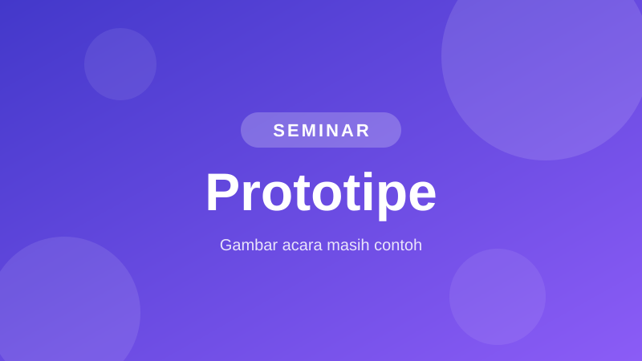
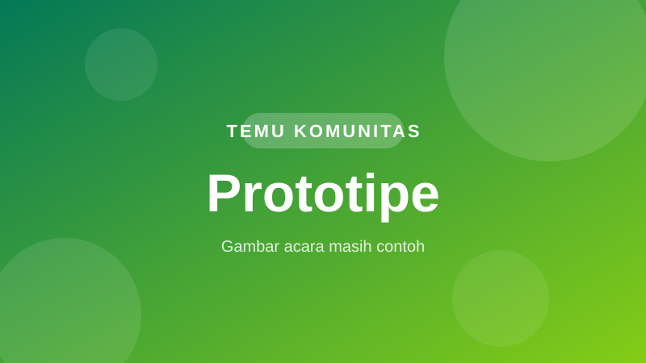
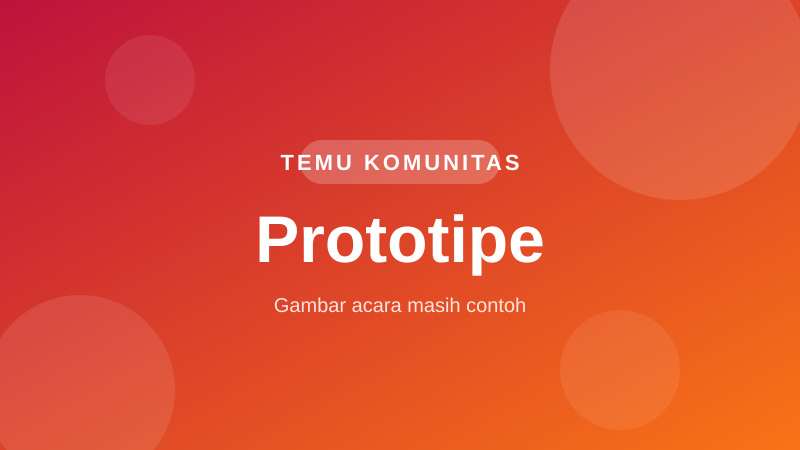

Keraton YogyakartaKomunitas TemanParenting
Belajar pengasuhan tidak harus sendirian. Pilih kota Anda, lalu ikuti seminar materi parenting dan temu komunitas yang dipandu oleh ahli di bidangnya.
Langkah 1
Pilih kota Anda
Acara komunitas tersedia di 5 kota. Setiap kartu menampilkan landmark ikonik kotanya.
Bandung
187Anggota9Kegiatan aktif6Ahli
Bundaran HIJakarta
312Anggota15Kegiatan aktif10Ahli
Jembatan SuroboyoSurabaya
164Anggota8Kegiatan aktif5Ahli
Lawang SewuSemarang
121Anggota6Kegiatan aktif4AhliFoto kota: Wikimedia Commons.
Langkah 2
Acara di Yogyakarta
Acara di atas adalah contoh (dummy) untuk prototipe, jadwal, tempat, dan pemandu belum final.
Laporan & Dokumentasi
Yang sudah dilakukan komunitas
Laporan dan dokumentasi kegiatan komunitas TemanParenting di berbagai wilayah.

SeminarYogyakarta
Seminar Disiplin Positif Tanpa Teriakan
Pembicara: dr. Ratna Wijaya, S.Psi., M.Psi., Psikolog (Nama Buatan)
Peserta berlatih merumuskan aturan rumah bersama dan mencoba kalimat pengganti bentakan. Dokumentasi: 24 foto.

Temu KomunitasBandung
Ngobrol Santai Mengasuh Balita
Pemandu: dr. Budi Santoso, S.Psi., M.Psi., Psikolog (Nama Buatan)
Diskusi kelompok kecil tentang tantrum dan rutinitas tidur balita. Dokumentasi: 18 foto.

Temu KomunitasSurabaya
Kelas Masak Bareng Anak
Pemandu: dr. Andi Pratama, S.Psi., M.Psi., Psikolog (Nama Buatan)
Anak-anak memasak bekal sendiri didampingi orang tua. Dokumentasi: 31 foto.
Laporan di atas adalah contoh (dummy) untuk prototipe.